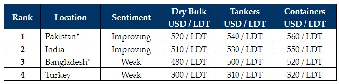

inWeekly Demolition Reports04/09/2023

A glimmer of optimism seems to have been aroused in the sub-continent ship recycling markets this week, as severalunits were reportedly concluded to optimistically fervent Cash Buyers (at increasingly firmer levels) who are perhaps eager to book tonnage pre-Monsoon end, in order to potentially satiate some of the forthcoming increase in demand from the sub-continent markets once the traditionally busy year-end / Q4 kicks in.
Several sales have reportedly been confirmed into Pakistan over the last month (a couple of units have even greeted Gadani’s waterfront this week), especially as L/C approvals are now (precariously) coming through for some of the tier-1 Recyclers in Gadani, where capacity and demand has been steadily fermenting for a better part of the year.
India too has seen some positive spikes in domestic steel plate prices this week, and with next week’s G20 nations conference that is scheduled to meet in India, positive announcements on infrastructure projects / developments are expected to be announced that should further boost the country’s economy and global footprint.
Indeed, global steel plate prices have firmed up by about 2% over this past week, reportedly off the back of Chinese measures to boost the housing market (lowering mortgage rates for the first time for domestic home buyers) and to support the Renminbi (the official currency of the People’s Republic of China).
Only in Bangladesh have plate prices remained stranded / flatlined in the doldrums for yet another week, as no serious offers on vessels have emanated from local Recyclers as a result. Moreover, foreign currency / U.S. Dollar reserves are still struggling to being balanced by the powers that be (invariably leading to tougher limits to open L/Cs) and End Buyers who still believe they can secure bargain deals closer to USD 450/LDT (in vain, if we may add).
The reality is that with India and Pakistani markets picking up again amidst some much-needed (and traditional) fourth quarter positivity flowing into the market, Bangladesh could be set for an extended spell on the sidelines whilst such poor offerings and sentiments persist locally. Finally, Turkey remains stable and unchanged since last week.
For week 35 of 2023, GMS demo rankings / pricing for the week are as below.

📄 Download PDF: Ship-recycling-market-insight-week-35-2023-Fourth-Quarter-Positivity.pdfSource: GMS,Inc. ,https://www.gmsinc.net/gms_new/index.php/web